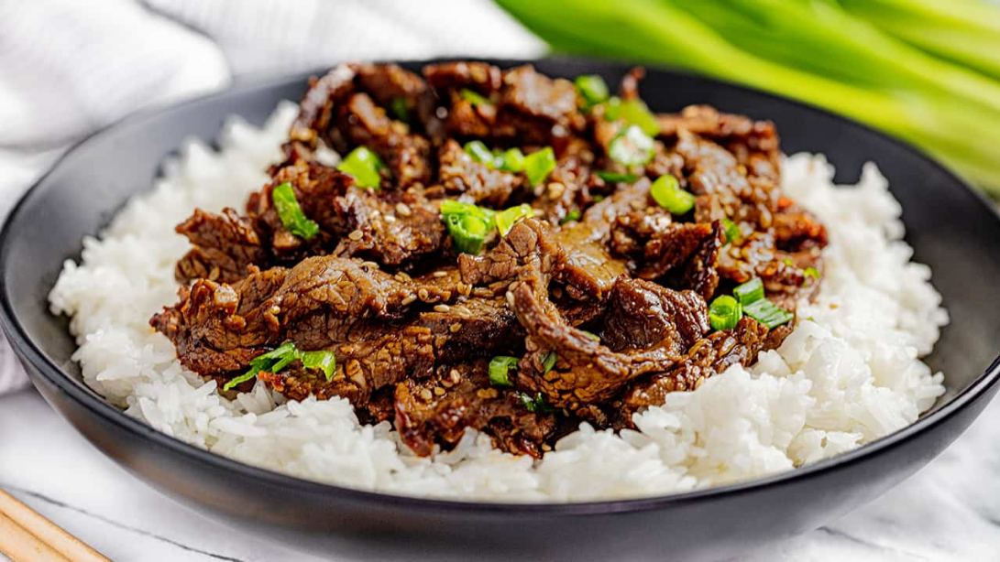

Korean Beef Bowl Recipe

Description
This is the recipe for my favorite Korean beef bowl, or Bulgogi dish.
I adapted this recipe ffrom a gif recipe on reddit. I think I have
made it more authentic with the addition of Gochujang paste, and both
light and dark soy suace. This dish is pretty quick to make, but always
remember to start the rice BEFORE you start cooking the dish, or you
will need to wait on the rice and the beef may get cold.
Ingredients:
- 1 lb of hinly sliced flank steak
- White rice - 1 Cup uncooked
- Brown sugar - 1/3 Cup
- Light soy sauce - 1/3 Cup
- Dark soy sauce - 1/3 Cup
- Gochujang paste - 1-2 Tablespoons (depending on how spicy you want it)
- Minced garlic - 4 cloves
- Minced ginger - 1/2 inch
- Red pepper flakes - to your liking
- scallions - 2/3 stalks copped
- Optional - Any other vegetables you wish, such as carrots or bell peppers
Recipe
- start cooking rice using your preferred method.
- combine Brown Sguar, soy suace, gochujan paste, garlic,
ginger, and red pepper flkaes in a bowl.
- add 1 tablespoon of oil to wok or skillet and heat over high heat untill smoking.
- Add sliced beef and cook while stirring until mostly all pink is gone.
- add sauce mixture to pan and cook stirring frequently untill the sauce has reduced and coated beef.
- add scallions and optional veggies.
- serve hot over rice.